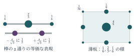

STEP II 1989、第13問
先に進む前に問題を読んでおこう。問題は STEP Support Programme の問題データベースにある： step.maths.org/questions/89-s2-q13
導入
一様な棒は、押されたり回されたりしたときにどのように振る舞うだろうか。実は、力学におけるあらゆる目的に対して、棒は3つの質点とまったく同じように振る舞う。両端にそれぞれ質量の6分の1、中央に3分の2を置いたものである。棒に対して何をしても（押しても、どの軸のまわりに回しても）、棒とこの3つの質点を区別することはできない。
\(\frac16\)、\(\frac23\)、\(\frac16\) という数には見覚えがあるかもしれない。これはシンプソンの公式（Simpson’s rule）\(\int_{-a}^{a}f \approx 2a\bigl(\frac16f(-a) + \frac23f(0) + \frac16f(a)\bigr)\) の重みであり、Aレベル（A level、英国の大学入学資格試験）で学んだことがあるかもしれない数値積分（numerical integration）の方法である。これは偶然ではない。力学的に等価（dynamically equivalent）な系と数値積分の公式は、同じ問題を解いているのである。
慣性モーメント（moment of inertia）は2019年に STEP の出題範囲から外された。物体のある軸のまわりの慣性モーメントは \(\sum m_id_i^2\)、すなわち各質量にその軸からの距離の2乗を掛けたものの和である（連続体ならば積分になる）。質量 \(m\)、長さ \(2a\) の一様な棒の、中心を通り棒に垂直な軸のまわりの慣性モーメントは \(\frac13ma^2\) である。平行軸の定理（parallel axis theorem）によれば、任意の軸のまわりの慣性モーメントは、重心（centre of mass）を通りその軸に平行な軸のまわりのモーメントに \(md^2\) を加えたものに等しい。ここで \(d\) は2つの軸の間の距離である。
取りかかる前に
2つの系が、同じ質量、同じ重心をもち、重心を通るすべての軸のまわりで同じ慣性モーメントをもつとする。このとき、平行軸の定理によって、それ以外のすべての軸のまわりでも慣性モーメントが等しくなるのはなぜか。
どの軸についても、2つの慣性モーメントはいずれも（\(O\) を通る平行な軸のまわりのモーメント）\(+ md^2\) に等しい。第1項は仮定により一致し、\(m\) と \(d\) は両方の系で同じである。■
順を追って解く
段階 1 棒
両端に質量 \(p\) を、中央に質量 \(q\) を置く。対称性から重心は正しい位置にある。全質量と、中心を通る垂直な軸のまわりの慣性モーメントからは、どのような条件が得られるか。
\(2p + q = m\) が必要であり、中央を通る垂直な軸のまわりの慣性モーメントは \(\frac13ma^2\) でなければならない。すなわち \(2pa^2 = \frac13ma^2\) である。よって \(p = \frac16m\)、\(q = \frac23m\) となる。
これは垂直な軸だけでなく、中心を通るすべての軸について成り立つか。
中心を通り棒と角 \(\psi\) をなす軸を考えると、棒に沿って距離 \(r\) の位置にある点は、軸から距離 \(r\sin\psi\) にある。したがって、（棒についても質点についても）どの慣性モーメントも垂直な軸の場合の値の \(\sin^2\psi\) 倍であり、両者はすべての \(\psi\) について一致する。（棒を含む平面内にない軸についても同様である。問題になるのは各点の軸からの距離だけであり、\(O\) を通る直線上の点については、これは \(r\) に比例する。）よって、棒は質量 \(\frac16m\)、\(\frac23m\)、\(\frac16m\) の質点と力学的に等価である。■
段階 2 長方形
薄板を一辺に平行な細い帯に切り分ける。各帯をそれと等価な3つの質点で置き換える。何が得られるか。そして次に何ができるか。
細い帯はそれぞれ棒であり、左端、中心線、右端にその質量の \(\frac16\)、\(\frac23\)、\(\frac16\) を置いたものと等価である。すべての帯について足し合わせると、薄板（lamina）は質量 \(\frac16M\)、\(\frac23M\)、\(\frac16M\) の3本の一様な棒（左の辺、中央、右の辺に沿ったもの）と等価になる。次に、これらの棒をそれぞれ同じ比の3つの質点で置き換える。各点の質量は2つの分数の積になる（図 11.7.1）。 \[\text{隅： } \tfrac16 \cdot \tfrac16 = \tfrac{1}{36}, \qquad \text{辺の中点： } \tfrac16 \cdot \tfrac23 = \tfrac19, \qquad \text{中心： } \tfrac23 \cdot \tfrac23 = \tfrac49,\] いずれも \(M\) 倍である。■
（厳密には、各置き換えは薄板全体の中心を通るすべての軸のまわりの慣性モーメントを保たなければならないが、実際に保たれている。各置き換えは、質量、重心、およびその部分の重心を通る軸のまわりの慣性モーメントを保ち、残りは平行軸の定理が引き受けてくれる。）
段階 3 対角線のまわりの正方形
一辺 \(2a\) の正方形について、対角線は2つの隅と中心を通り、これらは何も寄与しない。残りの2つの隅は対角線から距離 \(\sqrt2a\) に、4つの辺の中点は距離 \(\frac{a}{\sqrt2}\) にある。よって \[I = 2 \cdot \tfrac{1}{36}M \cdot 2a^2 + 4 \cdot \tfrac19M \cdot \tfrac{a^2}{2} = \tfrac19Ma^2 + \tfrac29Ma^2 = \tfrac13Ma^2. \qed\] これは、中心を通り一辺に平行な軸のまわりの慣性モーメントと同じである。（これは偶然ではない。正方形では、中心を通りその平面内にあるすべての軸について同じ答えが得られる。これは演習問題にある対称性の議論からわかる。）
段階 4 一様でない棒
棒の長さを \(L\) とし、一端から距離 \(x\) の位置での密度を \(\frac{2mx}{L^2}\) とする。\(x = 0\)、\(\frac L2\)、\(L\) に質量 \(p_0\)、\(p_1\)、\(p_2\) を置く。全質量、重心、端のまわりの慣性モーメントを一致させると3つの方程式が得られる。それはどのようなものか。
棒の全質量は \(m\)、軽い端のまわりの1次モーメントは \(\int_0^L x \cdot \frac{2mx}{L^2}\,\mathrm{d}x = \frac23mL\)、2次モーメントは \(\int_0^L x^2\cdot\frac{2mx}{L^2}\,\mathrm{d}x = \frac12mL^2\) である。これらを一致させると \[p_0 + p_1 + p_2 = m, \qquad \tfrac12Lp_1 + Lp_2 = \tfrac23mL, \qquad \tfrac14L^2p_1 + L^2p_2 = \tfrac12mL^2.\] 第2式を \(L\) で割ったものから第3式を \(L^2\) で割ったものを引くと \(\frac14p_1 = \frac16m\) となるので、\(p_1 = \frac23m\)、さらに \(p_2 = \frac13m\)、\(p_0 = 0\) である。必要な質点は2つだけであり、中点に \(\frac23m\)、重い端に \(\frac13m\) を置けばよい。■

振り返り
モーメントを一致させる。力学的に等価であるとは、質量分布の0次、1次、2次のモーメントを一致させることである。
1次元ずつ組み立てる。長方形は棒でできた棒であり、その重みは積になる。
方程式と未知数を数える。一致させるべきモーメントが3つ、未知の質量が3つある。そして、解にたまたま0が現れることもある。
背後にある数学
シンプソンの公式
質量分布のモーメントを一致させることは、数値積分の公式を設計することと同じ問題である。\(f = 1, x, x^2\) に対して厳密に成り立つ公式 \(\int_{-a}^{a}f(x)\,\mathrm{d}x \approx w_0f(-a) + w_1f(0) + w_2f(a)\) は \[w_0 + w_1 + w_2 = 2a, \qquad -aw_0 + aw_2 = 0, \qquad a^2w_0 + a^2w_2 = \tfrac23a^3,\] を満たさなければならない。これはまさに棒についての条件である（\(f = 1, x, x^2\) がそれぞれ質量、1次モーメント、慣性モーメントの役割を果たす）。解は \(w = 2a(\frac16, \frac23, \frac16)\)、すなわちシンプソンの公式である。対称性からおまけが得られる。\(f = x^3\) に対しても両辺が0になるので公式は厳密に成り立ち、したがってシンプソンの公式は3次関数を厳密に積分し、滑らかな関数に対する誤差は4階導関数に比例する。こうして棒は、3つの質点と質量、重心、慣性モーメントだけでなく、3次モーメントでも一致するのである。
ガウス求積と慣性テンソル
質量だけでなく位置も自由に選べるならば、質点は2つで足りる。\(\pm\frac{a}{\sqrt3}\) の各点に質量の半分ずつを置けばよい。確かめると \(2 \cdot \frac12m \cdot \frac{a^2}{3} = \frac13ma^2\) である。これは2点のガウス・ルジャンドル公式（Gauss–Legendre rule）\(\int_{-a}^{a}f \approx a\bigl(f(-\frac{a}{\sqrt3}) + f(\frac{a}{\sqrt3})\bigr)\) であり、これも3次関数に対して厳密である。カール・フリードリヒ・ガウス（Carl Friedrich Gauss）は1814年に、巧みに配置した \(n\) 個の点によって \(2n - 1\) 次の多項式を厳密に積分できることを示した。ガウス求積（Gaussian quadrature）は現在、数値解析の標準的な手法である。
力学では、物体の重心を通るすべての軸のまわりの慣性モーメントは、対称な \(3 \times 3\) 行列である慣性テンソル（inertia tensor）に集約される。質量、重心、慣性テンソルが等しい2つの物体は、あらゆる力に対してまったく同じように応答する。このため技術者は、シミュレーションにおいて複雑な部品をいくつかの質点で置き換えることができる。慣性テンソルの固有ベクトル（eigenvectors）は主軸（principal axes）であり、物体が定常的に回転できる軸である。
思考のスキル
2つの系が、問題にとって重要なすべての量において一致するならば、複雑なほうを単純なほうで置き換えよ。
ここでは3つのモーメントだけが重要だったので、連続な棒を3つの質点で置き換えることができた。大学では、この考え方はガウス求積として、電磁気学や重力理論における多重極展開（multipole expansions）として（遠方では、電荷分布や質量分布のいくつかのモーメントだけが重要になる）、また統計学におけるモーメント法（method of moments）として現れる。
次の一歩
シンプソンの公式。区間を1つだけとったシンプソンの公式を用いて \(\int_0^1\frac{\mathrm{d}x}{1 + x^2}\) を見積もり、\(\frac\pi4\) と比較せよ。この公式が \(\int_{-1}^{1}x^3\,\mathrm{d}x\) と \(\int_{-1}^{1}x^2\,\mathrm{d}x\) に対しては厳密であるが、\(\int_{-1}^{1}x^4\,\mathrm{d}x\) に対してはそうでないことを確かめよ。
すべての軸が同じ。正方形の薄板の、中心を通りその平面内にある任意の軸のまわりの慣性モーメントが \(\frac13Ma^2\) であることを示せ。（ヒント：9つの等価な質点は \(90^\circ\) の回転に関して対称である。このことから、\(\cos\psi\) と \(\sin\psi\) の2次式について何がいえるか。）
三角形。質量 \(M\) の一様な三角形の薄板が、各辺の中点に置いた質量 \(\frac13M\) の3つの質点と力学的に等価であることを示せ。
立方体。一様な中身の詰まった立方体について、\(27\) 個の質点からなる力学的に等価な系を求め、それを用いて一辺 \(2a\) の立方体の、1つの辺のまわりの慣性モーメントを求めよ。
さらに学ぶために
Daniel Kleppner & Robert Kolenkow, An Introduction to Mechanics（Cambridge University Press）。剛体と慣性モーメントの章。
Endre Süli & David Mayers, An Introduction to Numerical Analysis（Cambridge University Press）。シンプソンの公式とガウス求積を含む、数値積分の章。
Philip Davis & Philip Rabinowitz, Methods of Numerical Integration（Dover）。古典的な参考書。